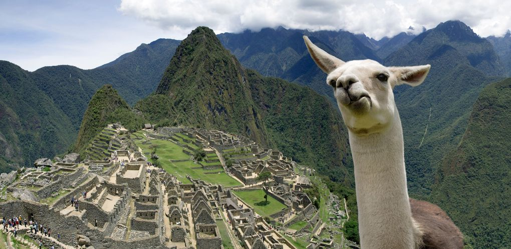
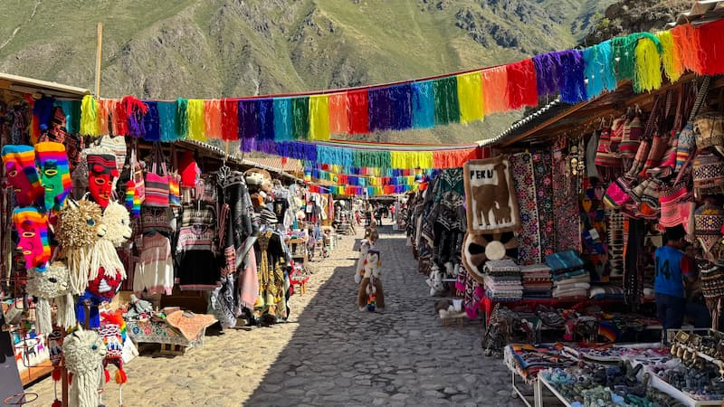
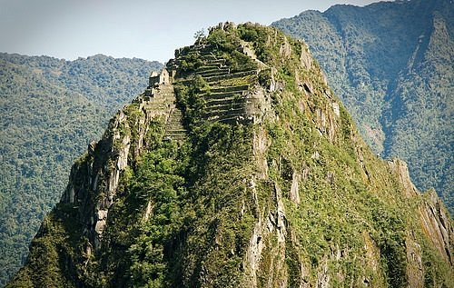

Sobre o destino
Cusco e Machu Picchu formam um dos roteiros mais incríveis da América do Sul. Enquanto Cusco oferece cultura, história e arquitetura colonial, Machu Picchu impressiona com suas ruínas incas cercadas por paisagens deslumbrantes.
Pontos Turísticos Imperdíveis:
- Machu Picchu: Cidade perdida dos Incas.
- Cusco: Centro histórico cheio de cultura.
- Vale Sagrado: Vilas tradicionais e paisagens incríveis.
- Trilha Inca: Experiência de trekking inesquecível.
- Sacsayhuamán: Impressionante sítio arqueológico.
Guia Rápido

Melhor época: Maio a setembro - é um período seco e ideal para explorar.

Como chegar: Voos até Cusco (via Lima) e depois trem ou trilha até Machu Picchu.

Idioma: Espanhol e quéchua - inglês em áreas turísticas.

Moeda: Sol peruano (PEN) - cartões aceitos, mas é recomendado levar dinheiro.
Custos Médios
- Hotel: S/100 - S/600 por noite
- Alimentação: S/20 - S/80 por refeição
- Transporte: S/10 - S/50 por trajeto
Localização
Galeria de Fotos


